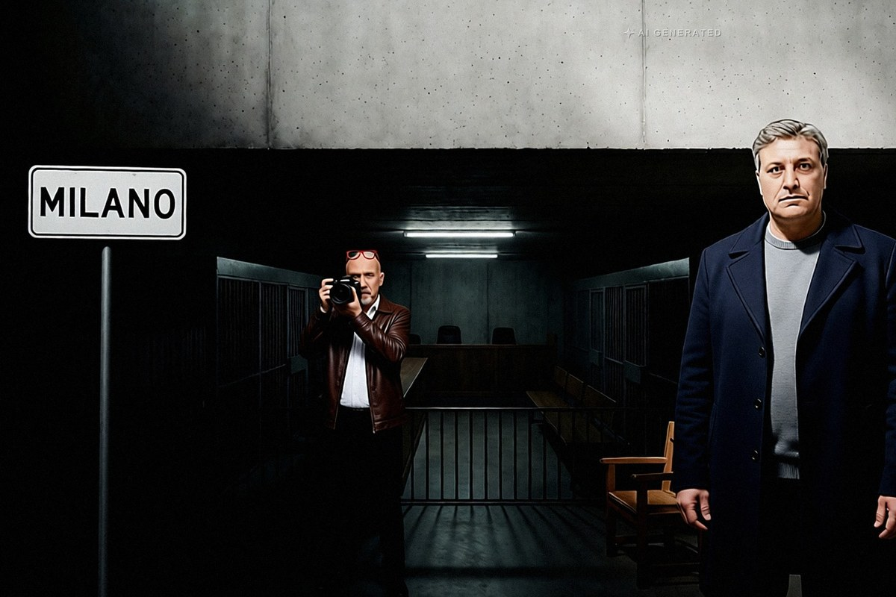

Cronaca · 28 ottobre 2026
Processo Hydra, si pente Vestiti: le ricadute sui boss siciliani

Nell'aula bunker di Milano l'uomo che per i pm teneva insieme Cosa nostra, 'ndrangheta e camorra ha cambiato avvocato e ha deciso di collaborare. È il sesto pentito del processo.
di Franco Zanghì
Giancarlo Vestiti, 58 anni, originario di Benevento, si è presentato il 28 ottobre nell'aula bunker di piazza Filangieri, a Milano, con un legale nuovo; lo stesso hanno fatto i figli, imputati con lui. Collabora con la giustizia: è il sesto pentito del processo Hydra, quello sulla presunta alleanza fra Cosa nostra, 'ndrangheta e camorra in Lombardia.
Per la procura di Milano, Vestiti era il referente in Lombardia del clan Senese, la camorra che da decenni opera a Roma. Il pentito Gioacchino Amico lo indica addirittura al comando dell'intera triade, e per gli investigatori era lui a tenere unito il gruppo quando nascevano le tensioni, una sorta di paciere fra le tre mafie. Che cosa dirà ai magistrati, al momento, non si sa.
Il filo che arriva in Sicilia
Secondo l'accusa, la parte siciliana del patto parlava proprio con lui. C'erano i palermitani, con Giuseppe Fidanzati, detto Ninni, figlio dello storico boss dell'Acquasanta Gaetano Fidanzati. C'erano i trapanesi, con Paolo Aurelio Errante Parrino, nato a Castelvetrano e cugino acquisito di Matteo Messina Denaro. E c'erano i catanesi del clan Mazzei. Estorsioni, false fatture, droga: per i pubblici ministeri i soldi finivano in una cassa comune, fra Milano e l'isola.
Una precisazione serve, perché qui si fa confusione. Fidanzati in quest'aula non c'è: a gennaio, con il rito abbreviato, è già stato condannato in primo grado a 14 anni. Errante Parrino invece è fra i 45 imputati del processo ordinario, insieme allo stesso Vestiti.
Le date della svolta
A fine maggio Vestiti è finito in carcere, dopo un lungo periodo ai domiciliari ottenuti, secondo la procura, con consulenze mediche false. Ad agosto è arrivato il 41 bis, il carcere duro, nel penitenziario dell'Aquila. Due mesi dopo è arrivata la collaborazione.
C'è poi una storia siciliana che aspetta una risposta: quella di Gaetano Cantarella, detto Tano u curtu, uomo dei Mazzei a Milano, scomparso nel febbraio 2020 dopo essere sceso in Sicilia. Per gli investigatori è lupara bianca, e il corpo non è mai stato trovato. Il catanese William Cerbo, anche lui collaboratore, ha raccontato ai magistrati che a un certo punto il punto di riferimento dei Mazzei a Milano era diventato proprio Vestiti.
Prima di lui avevano parlato Saverio Pintaudi, Francesco Bellusci, lo stesso Cerbo e Gioacchino Amico. E poi Bernardo Pace, trapanese del mandamento di Castelvetrano, trovato morto a marzo nella sua cella del carcere di Torino: su quella morte la procura tiene aperta un'inchiesta per istigazione al suicidio.
Per Vestiti, per i suoi figli e per gli altri imputati vale la presunzione d'innocenza fino alla sentenza definitiva, e la condanna di Fidanzati è soltanto di primo grado. Fino a ieri la difesa di Vestiti sosteneva che conoscere Michele Senese fin da ragazzino non significasse far parte del clan. In un processo che conta già sei collaboratori, il lavoro dei giudici sarà separare quello che trova riscontri da quello che non ne trova.
Fonti
- Ansa, «Caso Hydra, si pente il luogotenente del clan Senese in Lombardia», 28 ottobre 2026
- La Sicilia, «Il consorzio delle mafie, il nuovo pentito può fare male ai boss siciliani», 28 ottobre 2026
- Il Fatto Quotidiano, «Processo Hydra, si pente Giancarlo Vestiti», 28 ottobre 2026
- Giornale di Sicilia, «Caso Hydra, si pente il referente del clan Senese in Lombardia», 28 ottobre 2026
- Antimafia Duemila, «Hydra, processo riparte a Milano: 45 imputati», 2026
- Antimafia Duemila, «Inchiesta Hydra: carcere duro per il presunto boss dell'alleanza tra mafie», 2026
- L'Espresso, sentenza del rito abbreviato del processo Hydra, 13 gennaio 2026
- Fanpage, «Nelle carte del processo Hydra il caso del boss scomparso nel 2020»
- Ansa, ripresa dal Mattino di Padova, «Pentito morto in carcere a Torino, inchiesta resta per istigazione al suicidio», 29 aprile 2026
La collaborazione di Giancarlo Vestiti è emersa in udienza il 28 ottobre 2026 dal cambio di difensore suo e dei figli: i contenuti dei verbali non sono noti.